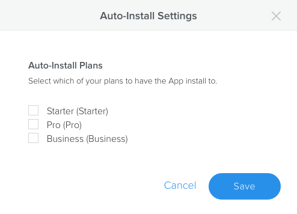

You release your app by associating it with a plan. Every site on that plan will have the app installed.
To release your app, you need to associate your app to a plan, and then publish the app, which changes its status to Active. Once the app is associated with a plan and published, sites will start to get the app installed automatically, as follows:
Existing sites: Sites associated with the app’s plan have the app automatically installed as soon as the app is set to Active.
Newly created site: If the new site chooses the plan associated with the app, the app is pre-installed to the site.
Site is upgraded: If an existing site is upgraded to the app’s plan, the app is installed during the upgrade.
Site plan changes: If an existing site changes to a plan not associated with the app, the app is automatically uninstalled from the site. However, any instances of the app on the site will remain.
To release your app:
Associate your app with a plan. On the app’s detail page, click Auto-Install Settings. A dialog displays the plans that you’ve created.
Select the plans that should include this app and click Save.

Associate the app to a plan
From the Version History area of the App Details page, click the ellipsis button for the version to become active, and choose Publish Version. The status for this version moves from Draft to Active
Note: Only one version of an app can be active at a given time. When you publish your app, if there was a previous active version, that one is moved to Archived.